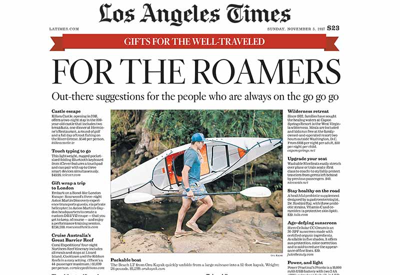
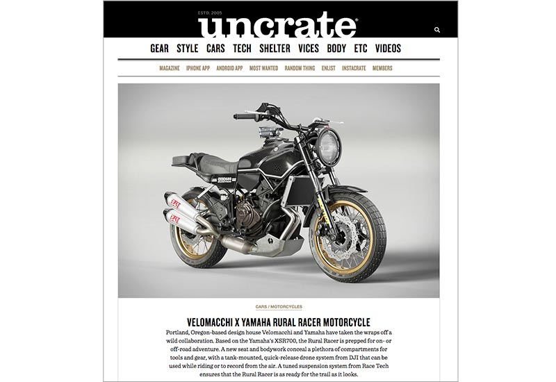
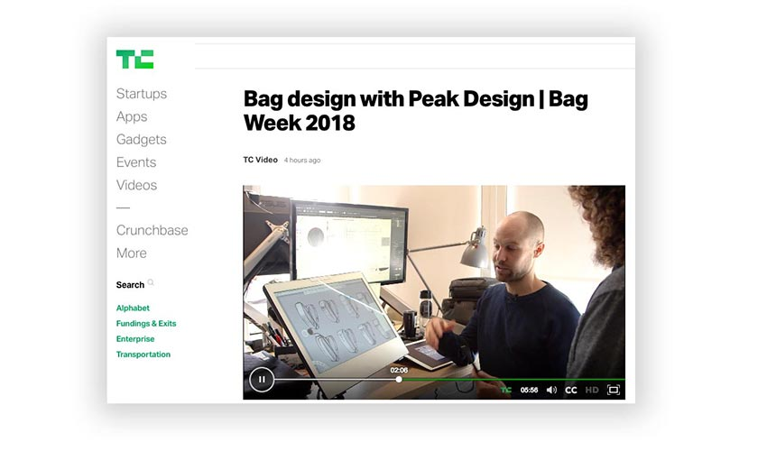
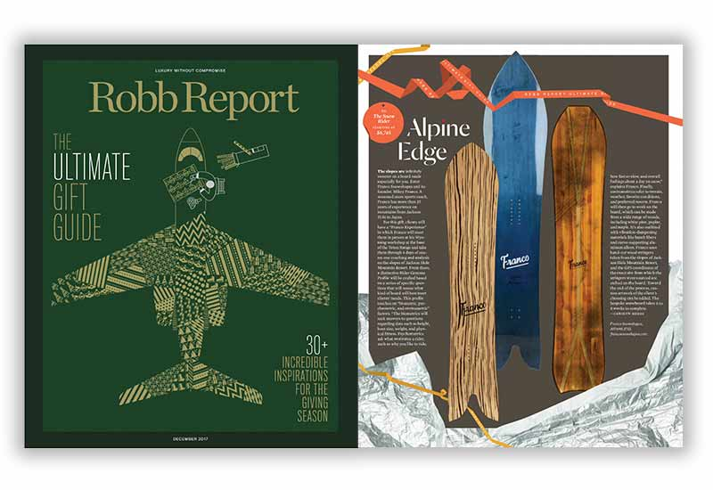
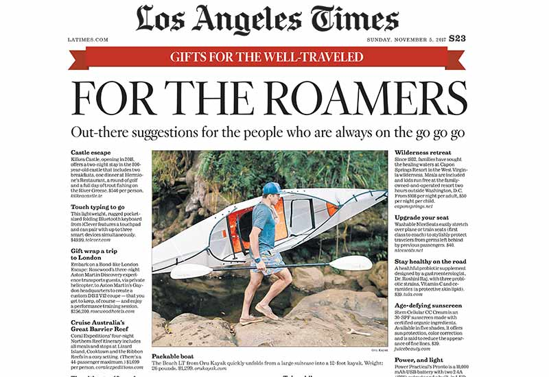
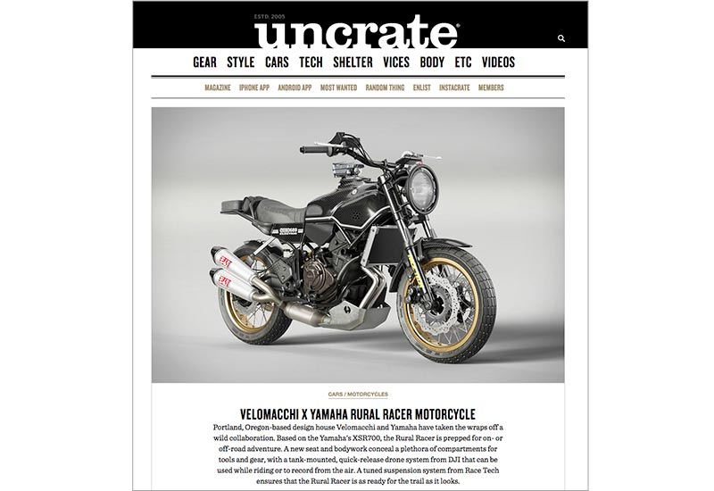
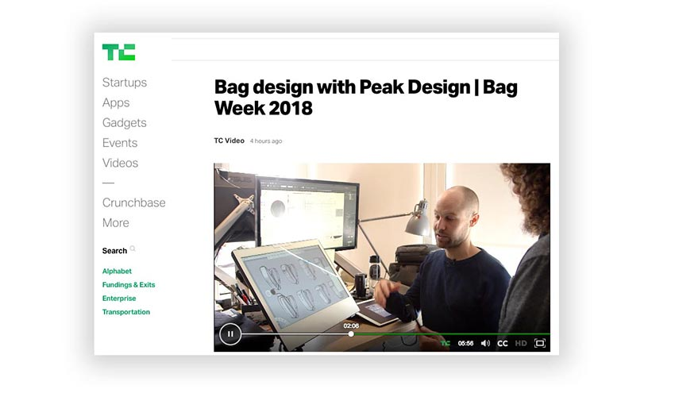
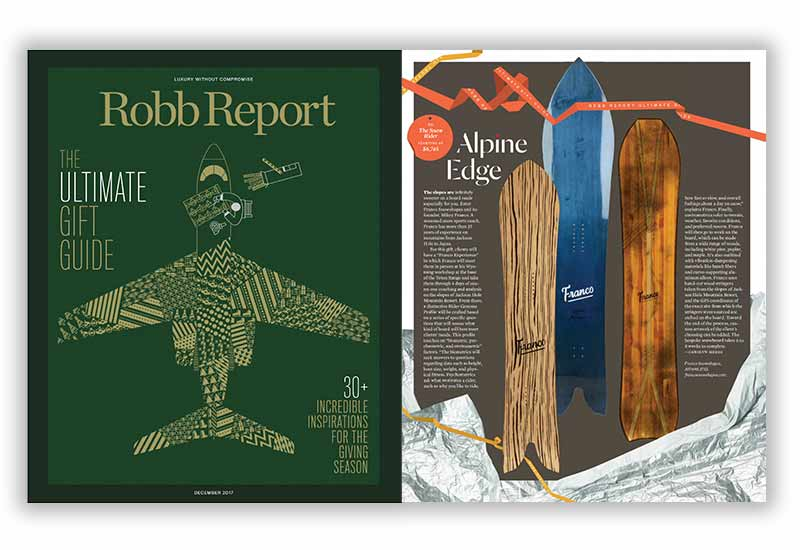

OUR WORK
CASE STUDIES
PEAK DESIGN
+ MoreORU KAYAK
+ MoreWOORMI
+ MorePEAK DESIGN
ORU KAYAK
WOORMI
Power Practical wanted to tell the world about how they have harnessed a unique relationship with Amazon to turn around their company and boom sales. We developed this infographic after digging deep into raw numbers to help visualize the story:
At the end of 2015, Power Practical, a small manufacturer of rugged electronic solutions, was facing an existential crisis. The company was getting squeezed by traditional wholesale margins and made the dramatic decision to drop all brick-and-mortar dealers and sell exclusively through Amazon and the company’s website.
Two years later — and with the help of Amazon — Power Practical has grown its “Luminoodle” business 82% YEAR-OVER-YEAR and has climbed into the top 1% of all Amazon sellers by dollar volume.
Power Practical wanted to tell the world about how they have harnessed a unique relationship with Amazon to turn around their company and boom sales. We developed this infographic after digging deep into raw numbers to help visualize the story: We know it all too well… there is nothing more aspirational than a beautifully executed cook book (even if you can’t boil an egg). When it came to promoting natural food brand GoMacro, we wanted to penetrate the editorial conversation on a deeper level. While we are well aware that editorial coverage of packaged food products is only x-amount, we also knew that there was a whole other editorial universe of recipes and how-to guides when it comes to food. That is why we connected GoMacro with popular vegan food blogger and recipe creator Lee Tilgman to help the world look at nutrition bars in a different way: as ingredients. Being a family owned and farm-inspired food brand, publishing a mini recipe guide using GoMacro bars as ingredients drove home many core brand messages and provided us with unique content that editors and bloggers have adored.
Power Practical wanted to tell the world about how they have harnessed a unique relationship with Amazon to turn around their company and boom sales. We developed this infographic after digging deep into raw numbers to help visualize the story: We know it all too well… there is nothing more aspirational than a beautifully executed cook book (even if you can’t boil an egg). When it came to promoting natural food brand GoMacro, we wanted to penetrate the editorial conversation on a deeper level. While we are well aware that editorial coverage of packaged food products is only x-amount, we also knew that there was a whole other editorial universe of recipes and how-to guides when it comes to food. That is why we connected GoMacro with popular vegan food blogger and recipe creator Lee Tilgman to help the world look at nutrition bars in a different way: as ingredients. Being a family owned and farm-inspired food brand, publishing a mini recipe guide using GoMacro bars as ingredients drove home many core brand messages and provided us with unique content that editors and bloggers have adored.
Peak Design launched on Kickstarter in 2010, just one year after the crowdfunding platform was founded. At the time, the brand raised nearly $360K in funding — not a huge amount by modern standards, but in 2010 it tallied as the second most funded campaign to-date. Since then, Peak Design has come back to the platform once a year, for 6 years straight, each time bringing real innovation and fueling the company’s fan-base.
Today, Peak Design has transformed itself from a one-trick pony to one of the most envied brands in all of crowdfunding. Peak Design finished their 2016 campaign with over $7.2M in crowdfunding and more than 29,000 customers capitalizing on the pre-sales. Total all Peak Design’s campaigns, and you’ll find they are they most crowdfunded brand in business.
Today, Peak Design has transformed itself from a one-trick pony to one of the most envied brands in all of
Purple Orange has been the AOR for Peak Design on 4 out of 6 campaigns over the last 6 years. With limited product samples and racing against the clock, each year Purple Orange has delivered the kind of national media attention that drives revenue into the eight figures.
Oru Kayak came to us in the beginning of 2017 asking for a robust experiential public relation program based on showing people how the company’s innovative boats work, not just telling them. Working together with Oru Kayak, Purple Orange helped organize and execute 7 media events over the course of the year — ranging from kayaking and deep-sea climbing in Indonesia to road tripping across the Olympic Peninsula in Airstream trailers.
The result was a superior brand of PR based on life-changing on-the-water experiences rather than email correspondence. Oru Kayaks have the ability to go where no other boats can, and they perform in a playful unexpected way. Combined with unparalleled ease-of-carry and beautiful design, we successfully wooed editors from across the spectrum as to why they should dedicate full-page editorial spreads to these funky foldable boats.
VOORMI, a disruptive performance wool manufacturer out of southern Colorado, is your quintessential start-up. With almost no brand recognition and limited media attention prior to Purple Orange, VOORMI needed a communications team that would help distill the company’s complex multi-tiered message and bring it to both mainstream and endemic media outlets.
produced an outpour of major media of both qantity and quality. Purple Orange helped VOORMI capture 10 major media awards including Men’s Journal Gear of the Year, National Geographic Gear of the Year, Entrepreneur’s 100-Brilliant Companies of 2015, and Popular Science’s Best of What’s New. We also landed in-depth feature brand stories in Outside Magazine, Backpacker, WIRED, Bloomberg, and Gizmodo. By the end of 2017, VOORMI was no longer a small unknown outfit; they were a well-known rising star.
We kicked off the campaign with a visit to NYC and a fun craft-beer-fueled media event in Boulder, CO to target outdoor and ski media outlets. The following 16 months
RECENT WORK
 







WHAT OUR CLIENTS SAY ABOUT US.
We suspect that most of our clients would describe their relationship with us as extension of their in-house marketing team — not your typical agency relationship.